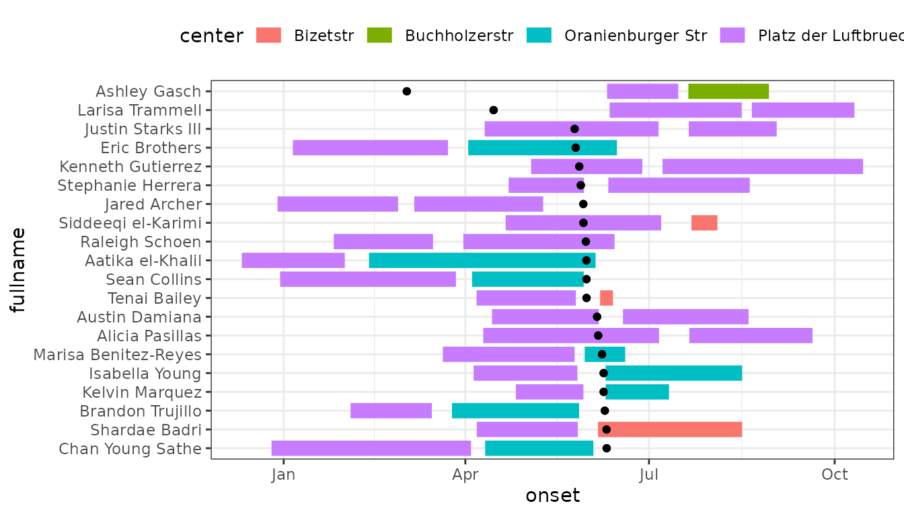

EpiGantt: epigantt charts in ggplot with ggsurveillance
Source:vignettes/Epigantt_with_ggsurveillance.Rmd
Epigantt_with_ggsurveillance.RmdEpiGantt examples
This vignette is still work in progress. But the examples are hopefully already helpful and inspiring.
Epi Gantt plots are used to visualize exposure times in infectious disease outbreaks. Hospital outbreaks are a common example for their use. Lying times of patients on different wards can be visualized and potential transmission routes identified.
outbreaks::varicella_sim_berlin |>
filter(center1 == "Platz der Luftbruecke") |>
arrange(onset) |>
slice_head(n = 20) |>
mutate(
fullname = paste(firstname, lastname),
fullname = factor(fullname, levels = rev(fullname))
) |>
pivot_longer(
cols = starts_with(c("arrival", "leave", "center")),
names_to = c(".value", "group"),
names_pattern = "(\\w+)(\\d+)"
) |>
ggplot(aes(y = fullname)) +
geom_epigantt(aes(xmin = arrival, xmax = leave, colour = center), linewidth = 4) +
geom_point(aes(x = onset)) +
theme_bw() +
theme(legend.position = "top")
ggplot(outbreaks::measles_hagelloch_1861, aes(y = case_ID, xmin = date_of_prodrome, xmax = date_of_rash, fill = class)) +
geom_vline_year(color = "grey50") +
geom_epigantt(linewidth = 1) +
scale_x_date(date_breaks = "2 weeks", date_labels = "W%V'%G") +
theme_bw()